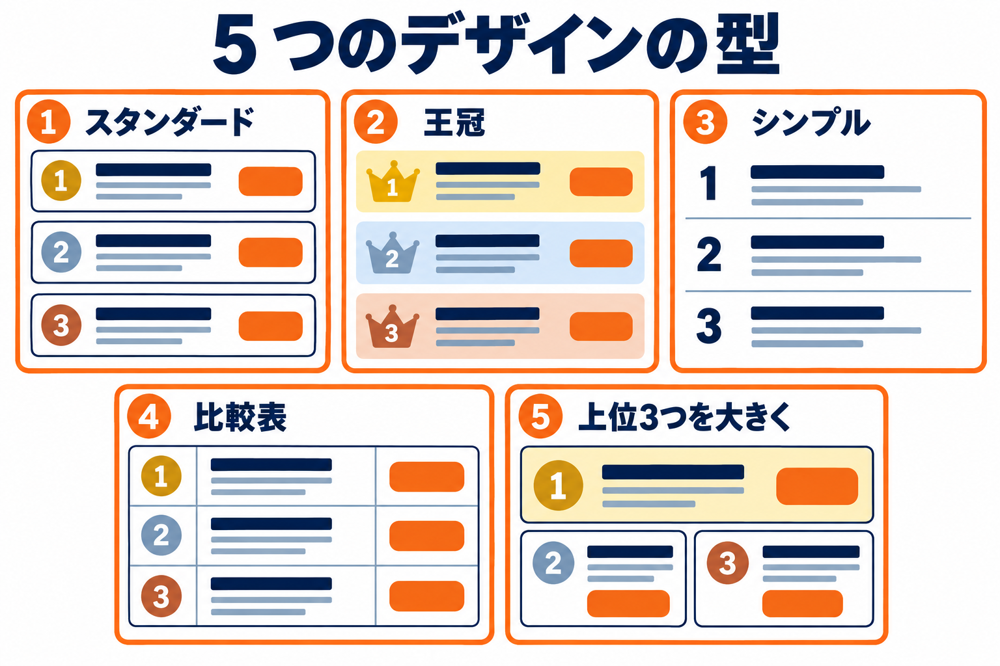
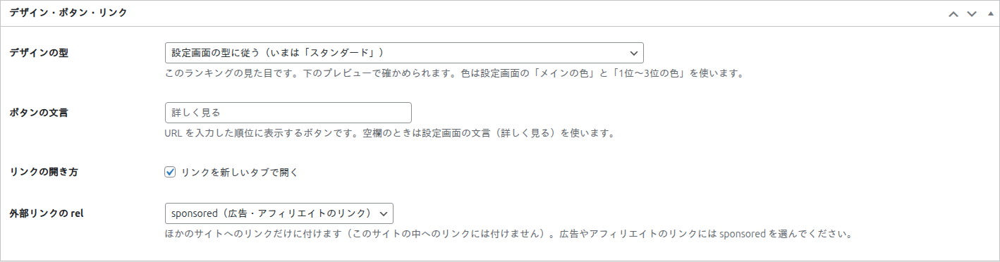
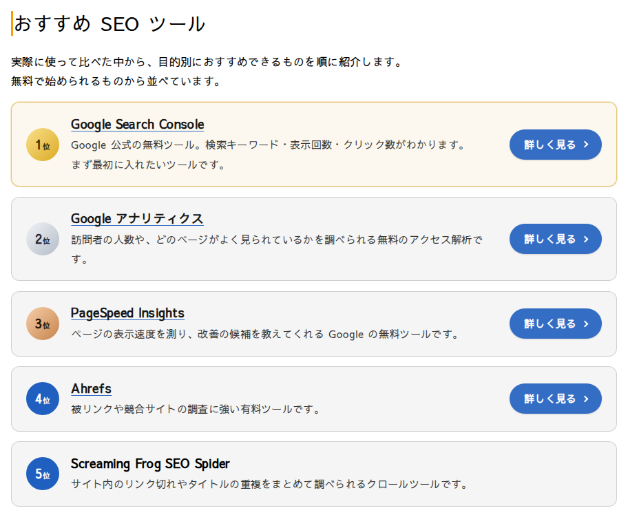
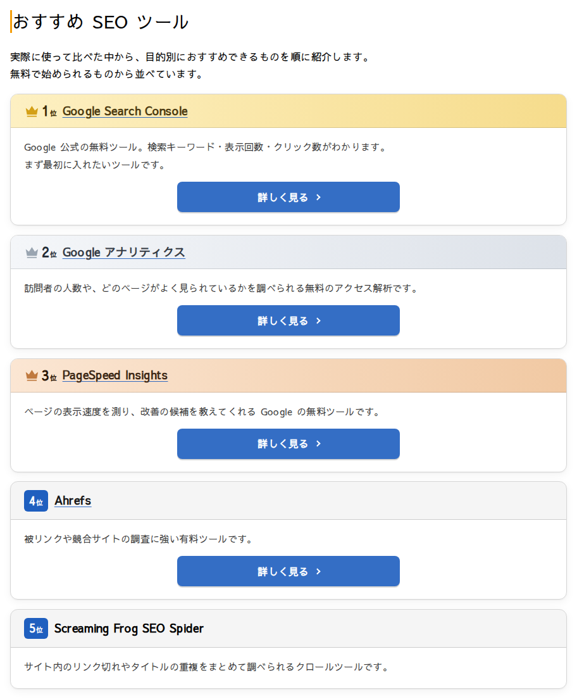
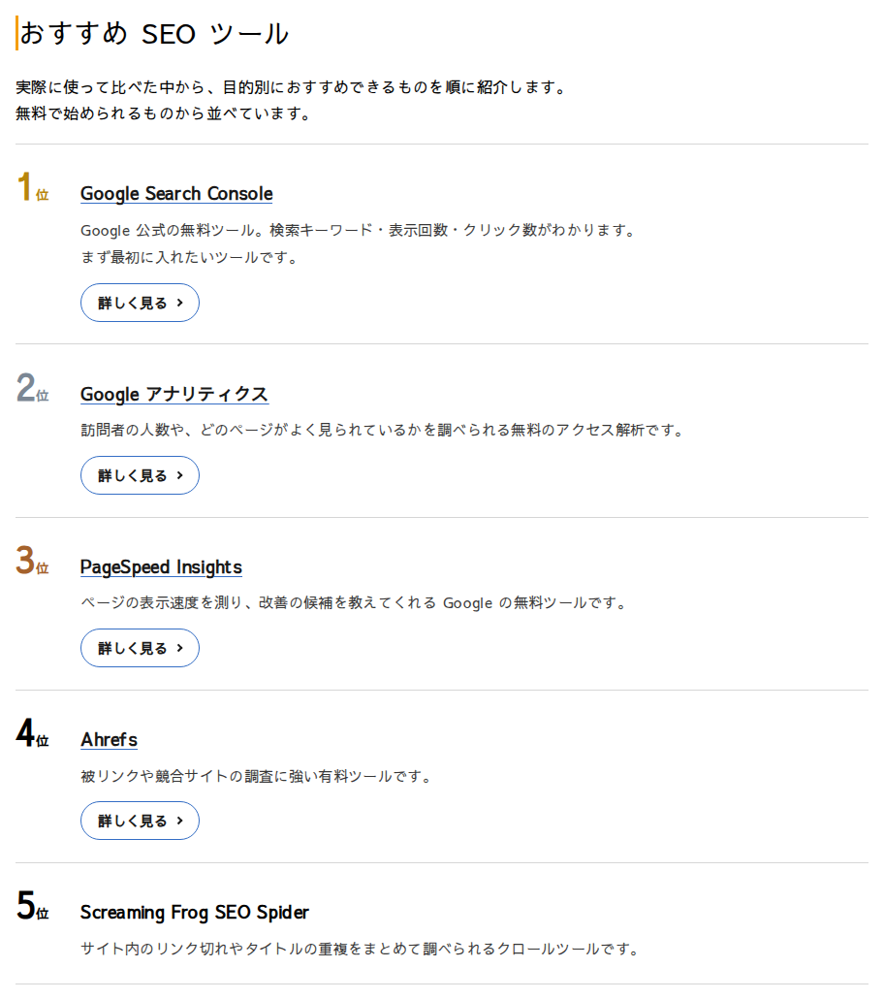
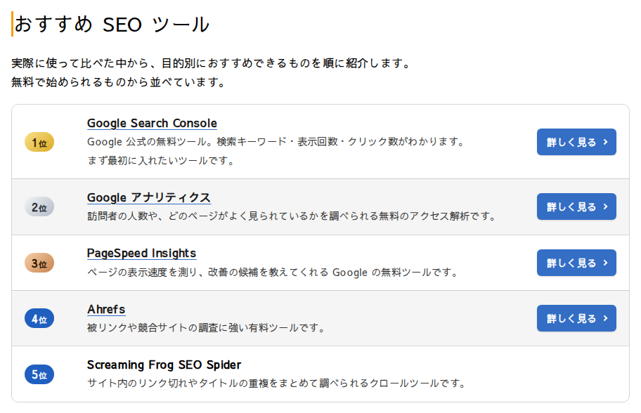
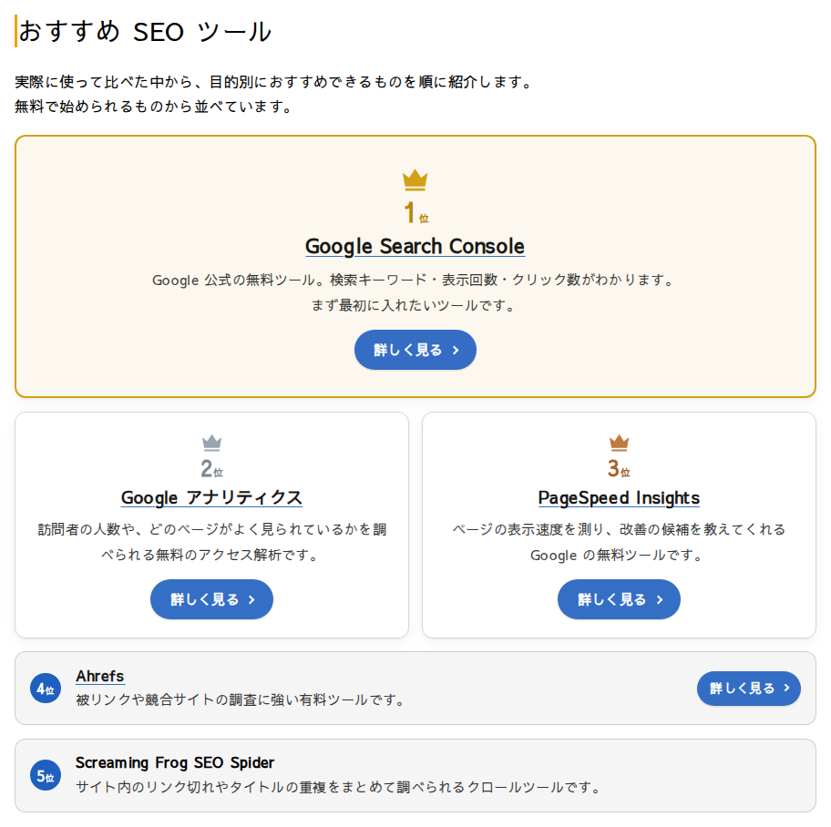
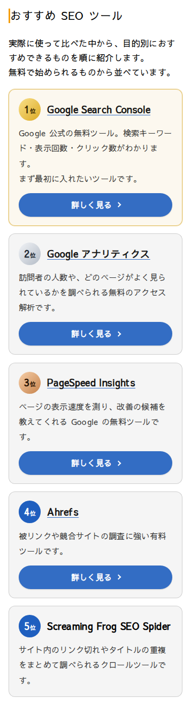
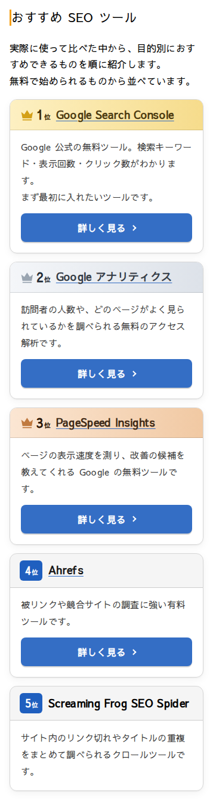
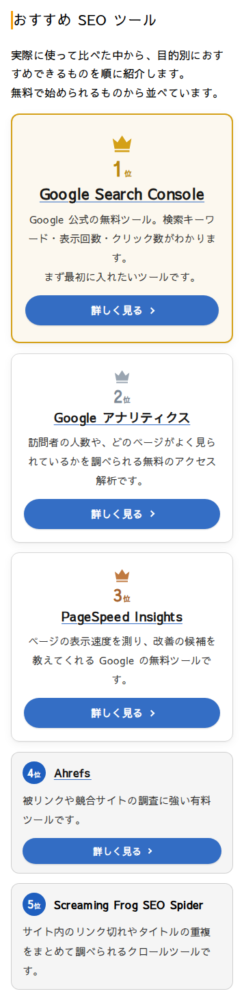

デザイン・ボタン・リンク
ランキングの見た目（5 つの型）・ボタンの文言・リンクの開き方を決める「デザイン・ボタン・リンク」ボックスの使い方です。

ランキングの編集画面のボックス「デザイン・ボタン・リンク」では、そのランキングの見た目と、ボタン・リンクの動きを決めます。ここで決めた内容は、そのランキングだけに働きます。すべてのランキングの既定の見た目は、設定画面で決めます。

項目の一覧
| 項目 | 説明 | 入力できる範囲・既定値 |
|---|---|---|
| デザインの型 | このランキングの見た目を、5 つの型から選びます。 | 既定は「設定画面の型に従う」 |
| ボタンの文言 | URL を入力した順位に表示するボタンの文字です。空欄のときは、設定画面の文言を使います。 | 40 文字まで。空欄が既定 |
| リンクの開き方 | 「リンクを新しいタブで開く」にチェックを入れると、名称のリンクとボタンが、新しいタブで開きます。 | 既定はオフ |
| 外部リンクの rel | ほかのサイトへのリンクに付ける rel（リンクの性質を伝える印）を選びます。 | 既定は「付けない」 |
デザインの型
選択肢の先頭は「設定画面の型に従う（いまは「○○」）」です。これを選ぶと、設定画面で決めた型で表示され、設定画面の型を変えると、このランキングの見た目も変わります。型を選ぶと、そのランキングだけ、その型で表示されます。
| 型 | 見た目 |
|---|---|
| スタンダード | 順位の丸・名称・説明・ボタンを、1 枚ずつのカードにします。どんな記事にもなじむ基本の形です。 |
| 王冠 | 1 位〜3 位に、王冠と金・銀・銅の帯がつきます。おすすめ記事・比較記事で定番の形です。 |
| シンプル | 大きな順位の数字と罫線だけの、雑誌のような落ち着いた形です。 |
| 比較表 | 1 行に 1 つずつの表の形です。順位が多いときに見比べやすい形です。 |
| 上位3つを大きく | 1 位を大きく、2 位・3 位を並べ、4 位以下は小さな行にします。上位を強くすすめたいときの形です。 |
色は、設定画面の「メインの色」と「1位〜3位の色」を使います。ボックスの下の「プレビュー」で、入力中に見た目を確かめられます。
ページでの見え方（パソコン）
同じ内容を、5 つの型で表示した例です。見出しや文字の大きさ・フォントは、お使いのテーマによって変わります。





どの型でも、URL が空の順位には、リンクもボタンも出ません（例では 5 位）。
ページでの見え方（スマホ）
ランキングは、置いた場所の幅に合わせて形を切り替えます（画面の幅ではなく、ランキングを置いた枠の幅です）。幅が狭いときは、説明とボタンが縦に並び、スマホでも読みやすい形になります。



「置いた場所の幅に合わせた切り替え」は、新しいブラウザで働きます。古いブラウザでは、幅が広くても、狭い形（縦に並ぶ形）のまま表示されます。内容は同じように読めます。
ボタンの文言
- URL を入力した順位にだけ、ボタンが表示されます。名称は、URL があればリンクになります。
- ランキングごとにボタンの文言を決めると、設定画面の文言より、そちらが優先されます。
- 空欄のままにすると、設定画面の文言（初期値は「詳しく見る」）を使います。入力欄の薄い文字が、いま使われる文言です。
リンクの開き方
| 設定 | 結果 |
|---|---|
| チェックなし（既定） | リンクは、いま見ているタブで開きます。 |
| 「リンクを新しいタブで開く」にチェック | 名称のリンクとボタンが、新しいタブで開きます。新しいタブには、元のページを操作できないようにする安全のための設定（noopener）が自動で付きます。 |
外部リンクの rel
rel は、リンク先とどういう関係のリンクかを、検索エンジンに伝える印です。ほかのサイトへのリンクだけに付きます（このサイトの中へのリンクには付きません。「www.」の有無だけが違うアドレスは、同じサイトとして扱います）。
| 選択肢 | 結果・使いどころ |
|---|---|
| 付けない | rel を付けません。 |
| nofollow（リンク先を評価しない） | リンク先を評価してほしくないときに選びます。 |
| sponsored（広告・アフィリエイトのリンク） | 広告やアフィリエイトのリンクのときに選びます。 |
| sponsored nofollow（両方） | 両方を付けます。 |
広告やアフィリエイトのリンクを載せるときは、「sponsored」を選んでください。リンクの性質を、検索エンジンに正しく伝えるためです。リンクの扱いは、検索エンジンの判断によります。